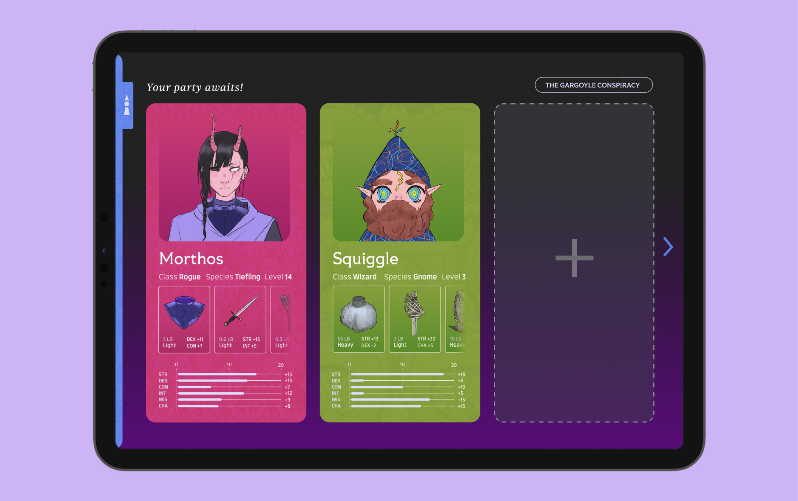
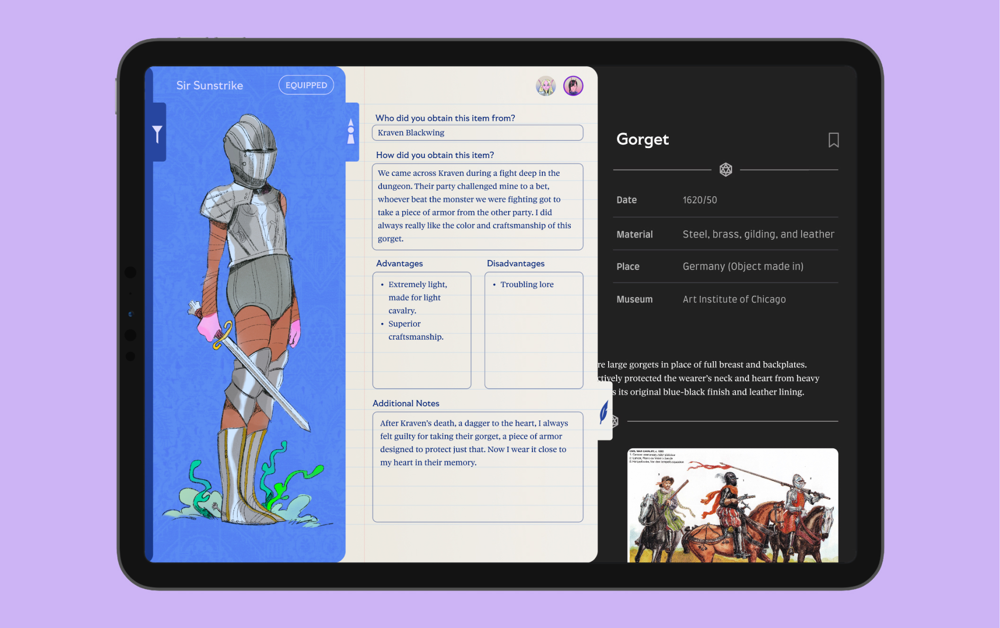

Galleries and Goblins is an iPad app that combines information from the museums' arms and armory section with character and outfit customization and note taking capabilities so that users may learn more about artifacts while using real, documented items for their Dungeon and Dragons campaigns.
Context
The Art Institute of Chicago’s (AIC) Arms and Armory is an installation of nearly 350 items includes full suits, half suits, pole arms, cannons, a shield with two swords, and, for the first time at the Art Institute, a knight on a fully arrayed horse—something previously impossible due to the low ceilings in Gunsaulus Hall. It covers arms and armor across Europe spanning the 13th century to the 17th century.
Dungeons & Dragons (DnD) is a tabletop role-playing game. Each player creates their own character to form a party that embarks upon adventures within a fantasy setting. A Dungeon Master serves as referee and storyteller for the game. Throughout the series of gaming sessions, characters level up and become more powerful. Players choose a class when they create their character which gives them special perks and abilities.
Design Approach
The problem at hand is that due to the Arms and Armory collection's size, it is difficult for visitors to locate and learn in-depth about the artifacts in a digestible way, especially for younger audiences. To remedy this issue, we gamifyed the learning experience by combining the catalogue into a DnD companion app. Users could filter through the items, record the use of arms and armory artifacts found at the AIC in their DnD campaign, all while learning details about different artifacts.
We also faced the challenge of cohesively combining scholarly information with fantasy elements. We faced the challenge by combining images lifted directly from the museums with a saturated, children's book illustration aesthetic for the fantasy characters. We integrated the aesthetics changing the the images' style as they are worn. When an artifact is tapped on and worn, they move from the informational bio section into the character tab while changing aesthetics from photograph to illustration, highlighting the interaction between real-life artifacts and fantasy.
Process


Explore
Browse through a variety of artifacts by filtering them by museum, item type, occasion, time, material, or location.
Learn
Pick an artifact to dive deeper into its history and story.
Record
Dress your character in different items, track what they’re wearing, and jot down notes along the way.
Interact
View the records of your friend's characters.
 Commemorate
Capture and share pictures of you and your friends' characters together in different settings and moments.